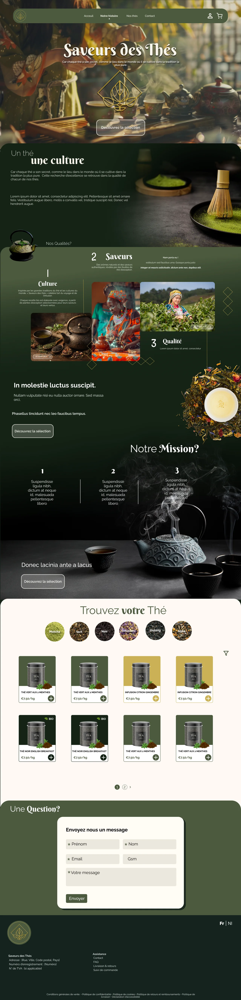
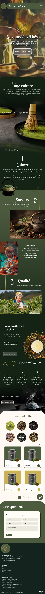

Web Mockup exercise
Saveurs des Thés



RoleWeb Design
ToolsFigma, Photoshop
YearMarch 2026
ClientFictional
Web Mockup exercise


Saveurs des Thés is a concept website for a tea shop that sells loose-leaf teas, from matcha to black teas, infusions and blends. I designed the desktop and mobile versions of the site: it tells the shop’s story, explains what makes its teas special, and lets visitors browse the range and order.
The goal here was to create a calm, premium site that reflects the culture behind tea, while keeping the shop simple to use. Visitors needed to move from the story to the products without feeling pushed, and to find a tea quickly by type.
The client provided the logo, a fine gold line drawing of a tea leaf inside a circle, so the visual direction grew out of it. The gold and the deep green it sits on became the base of the palette, and the dark green backgrounds let the thin gold lines stand out. Its delicate stroke set the rest of the style: the diamond line patterns repeat its geometry, the buttons are outlined and rounded instead of filled, and the high-contrast serif titles share its fine, elegant feel. The warm, dark photography of teapots, steam and tea fields uses the same earthy tones. Everything is meant to feel like it belongs to the same brand as the logo.
The palette comes straight from the product and from the client’s gold logo. A deep forest green sets the calm, serious tone of the darkest sections and the footer, and a softer olive green is used for the navigation, product cards and buttons, so the page stays natural without feeling heavy. A muted gold, taken from the logo, is kept for highlights and accent cards, which keeps it precious and prevents it from overwhelming the page. Warm creams and sand tones fill the shop section and the contact form, giving the products and fields a clean, open background after the darker story sections. Together they feel refined rather than loud, which suits a product people buy to slow down.
The page moves from story to shop. It opens with the brand story, then the qualities, the mission and finally the products, so visitors learn why the shop is different before they see prices. Sections overlap with rounded corners and images sit at slightly different positions, which keeps the page from feeling like a rigid grid. In the shop, round tea swatches (Matcha, Vert, Noir, Infusions, Oolong, Maté) let visitors filter by type visually, and consistent product cards make the range easy to scan.
No AI was used by me on this project. Although some Illustrations may have originally been AI generated.